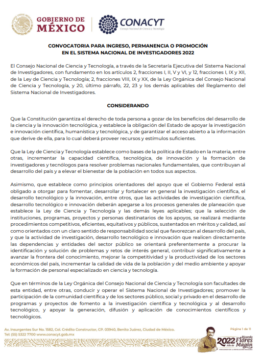
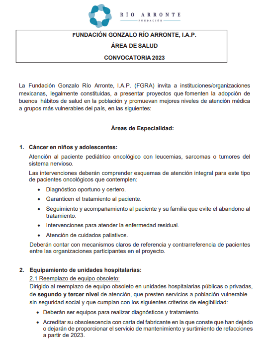
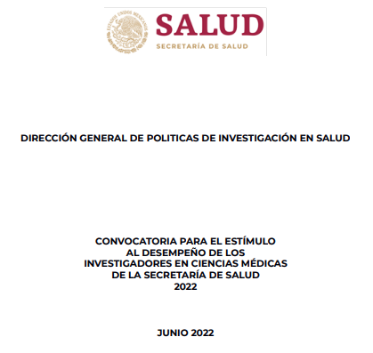

Convocatorias
- Autor
- HRAEI
- Fecha de actualización
- 14 de febrero de 2023
Convocatorias para el ingreso, y la permanencia al SNI en ciencias
médicas de la secretaria de salud
  
Criterios de Evaluación SNI
 Área I: Físico Matemáticas y ciencias de la tierra.
Área I: Físico Matemáticas y ciencias de la tierra.  Area V:Ciencias Sociales.
Area V:Ciencias Sociales.  Area VII:Ingenierías.
Area VII:Ingenierías.  Comisión Transversal de Tecnología.
Comisión Transversal de Tecnología.